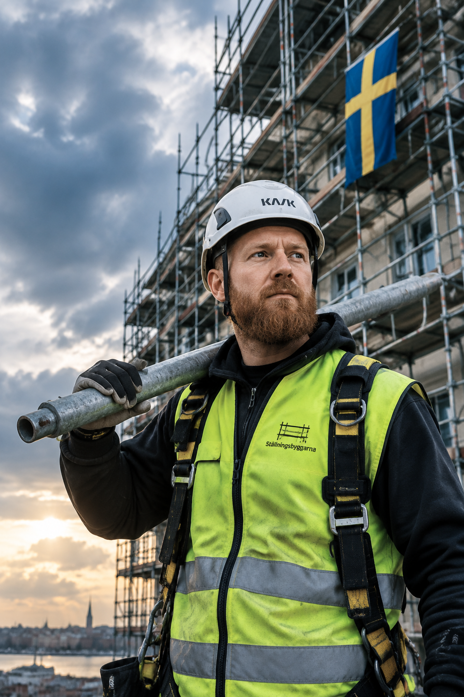
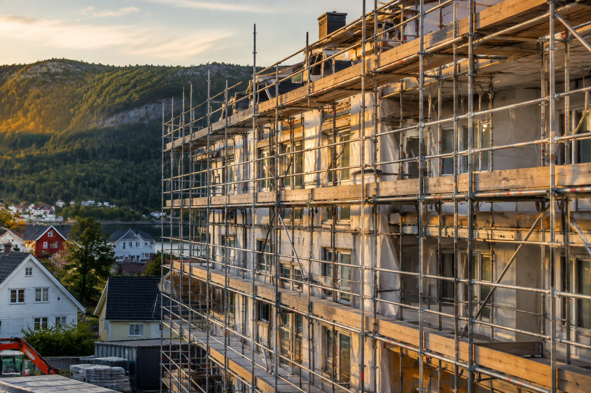
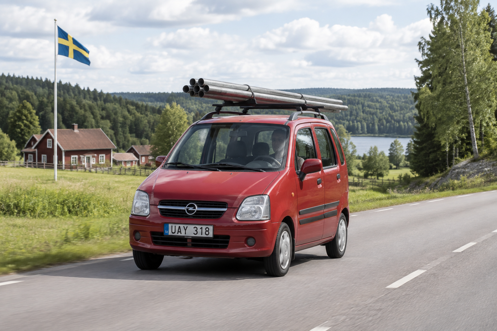
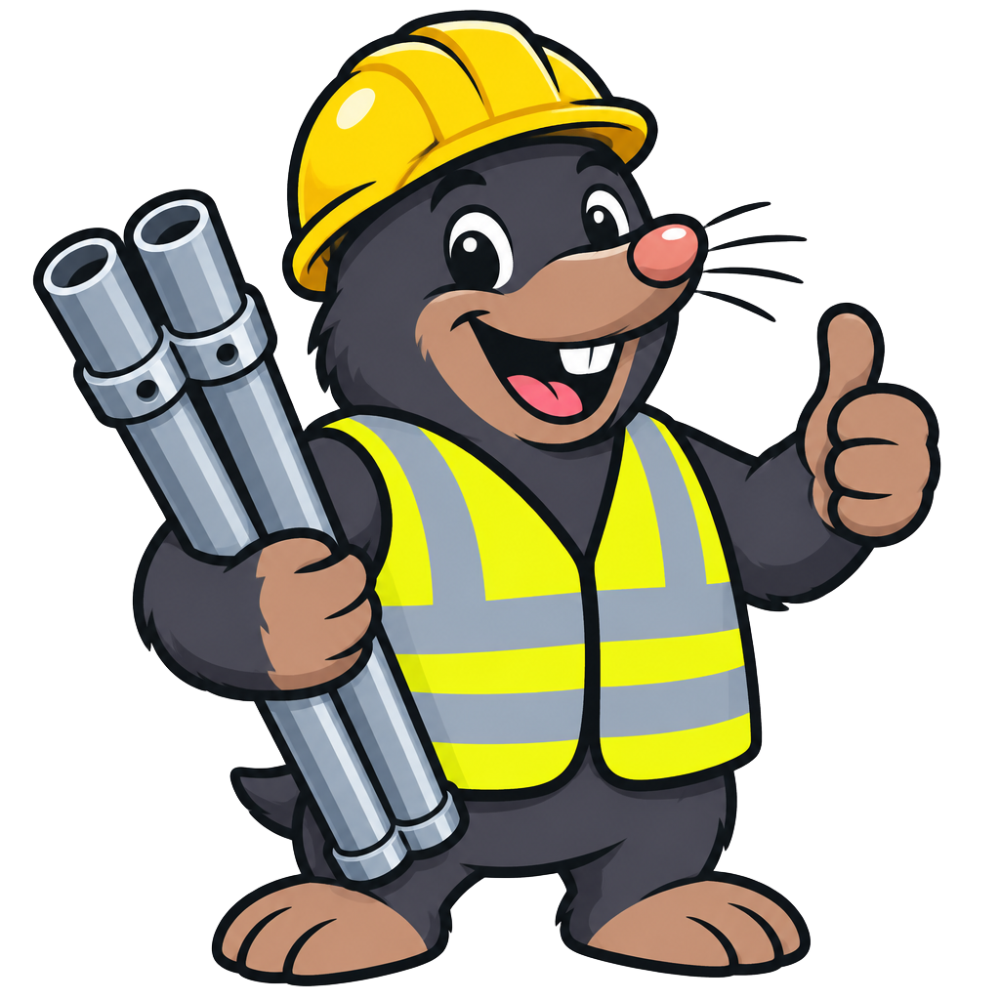

Marek
Ställningar
Lešenárske práce v Švédsku — priemysel aj fasády. Ideme na to s rozumom, s rukami a s férovým prístupom. Ďalej smerujeme do Nórska a Dánska.
- Práca na priemyselných objektoch aj fasádach
- Stabilná práca v overených firmách
- Dlhodobé projekty po celom Švédsku
- Doprava hradená
- Ubytovanie hradené
- Istota a férové podmienky

Doprava hradená
Zabezpečíme aj cestu do Švédska, nemusíte riešiť nič sami.
Ubytovanie hradené
Bývanie priamo pri projektoch, pohodlne a bez starostí.
Istota a férové podmienky
Overené firmy, včasná výplata a férová odmena za každú hodinu.

Naše práce
Priemysel aj fasády
Lešenie
Stavba a demontáž lešení na všetkých typoch objektov.
Montáž
Profesionálna montáž konštrukcií podľa severských noriem.
Priemysel
Dlhodobé projekty v priemyselných závodoch po celom Švédsku.
Fasády
Lešenie a práce na fasádach bytových aj rodinných domov.
Kde pôsobíme
Švédsko dnes. Nórsko a Dánsko čoskoro.

Švédsko
Pôsobíme tu dlhodobo. Stabilné projekty v overených firmách po celej krajine.
Nórsko
Rozširujeme sa. Rovnaké podmienky, rovnaká férová práca.
Dánsko
Ďalšia zastávka na našej ceste Severom. Informácie čoskoro.

100 EUR/h
Krtko vie, kde je dobrá robota.
A my vieme, kde sú dobré peniaze.
Kontaktuj nás
Potrebujete lešenie?
Pracujeme po celom Švédsku — priemysel, fasády aj nové projekty. Zavolajte nám a dohodneme si termín, všetko ostatné vyriešime my.